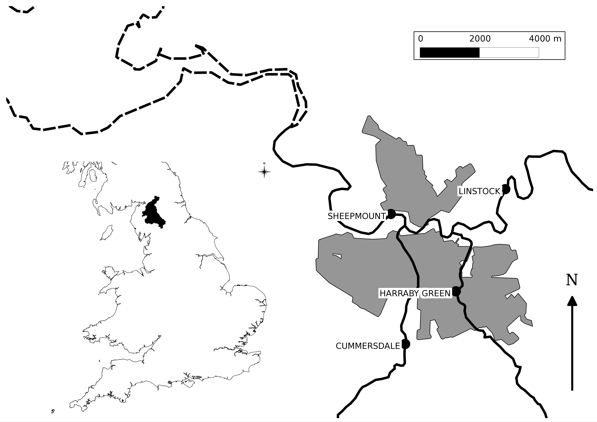

Chapter 6 River Eden Example
The first half of the training course is working through an example application based on the Eden Catchment in Cumbria, UK (see Figure below). At the Sheepmount gauging station downstream of Carlisle, which is the lowest monitored point in the catchment, the total area is 2400 km\(^2\).
The River Eden and its main tributaries including the Rivers Eamont, Irthing, Petteril and Caldew link a number of significant areas for runoff generation which include the northern and eastern parts of the Lake District; areas of the Northern Pennines and Kielder Forest. These areas are typified by high annual rainfall totals and steep terrain. Moreover the confluences of two of these main tributaries lie within the Carlisle urban area resulting in a complex situation where significant inflows on any tributary may result in flooding. In January 2005 Carlisle was flooded by an event with an estimated 0.0067 Annual Exceedance Probability (AEP) at the Sheepmount Gauge (Clarke 2005; Day 2005). Subsequently to this events in 2010, and particularly 2009, came close to over topping the main flood defences. The significance of the 2005 flood, combined with a post event survey of 263 water or wrack marks, has resulted in multiple inundation model studies (Neal et al. 2009; Horritt et al. 2011; Fewtrell et al. 2011) and modelling (Leedal et al. 2013, Smith et al. 2013).

FIGURE 6.1: Map of the River Eden Catchment
6.1 Available Data
The directory “eden_data/unprocessed” contains the starting data given in the table below
| File | Contents |
|---|---|
| Eden_Flow.csv | Discharge data (m\(^3\)/s) for the Sheepmount Gauge provided by the environment Agency |
| Eden_Gauge_Sites.csv | Locations of selected gauges in the Eden Catchment from the NRFA |
| Eden_Catchment.* | Outline of the Study area and sub-catchments. Derived from gauge catchments in the NRFA |
| Eden_Urban.* | Locations of urban areas as used in the 2011 census, from data.gov.uk |
| Eden_Catchment.* | Outline of the Study area and sub-catchments. Derived from gauge catchments in the NRFA |
| Eden_River_Network.* | River Network within the catchment. Taken from OS Open Rivers |
| Eden_DEM.tif | Digital Elevation Model generated by aggregating OS Terrain 50 to 100m resolution |
| Eden_Precip.nc | A time series of rainfall fields. Derived from the GPM IMERG final product by converting accrued rainfall in m |